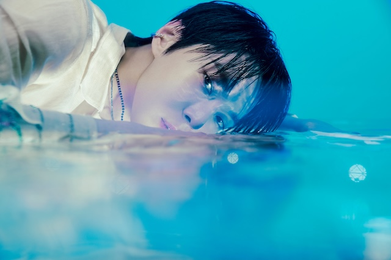
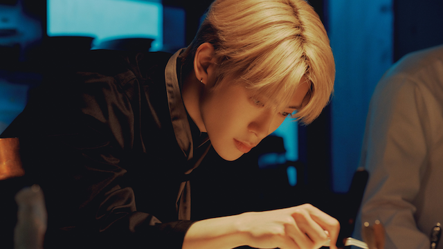

About DoJaeJung
DoJaeJung is a talented subunit of NCT, composed of three members: Doyoung, Jaehyun, and Jungwoo. Known for their smooth vocals, sophisticated style, and mesmerizing stage presence, DoJaeJung has captured the hearts of fans worldwide.
Meet the Members
-

Doyoung
Birth Name: Kim DoYoung
Birthday: February 1, 1996
Position: Main Vocalist
Facts: Known for his powerful vocals and emotional delivery.
-

Jaehyun
Birth Name: Jeong JaeHyun
Birthday: February 14, 1997
Position: Lead Vocalist, Lead Dancer
Facts: Charismatic performer with a rich, deep voice.
-
Jungwoo
Birth Name: Kim JungWoo
Birthday: February 19, 1998
Position: Lead Vocalist, Lead Dancer
Facts: Beloved for his unique tone and graceful energy.